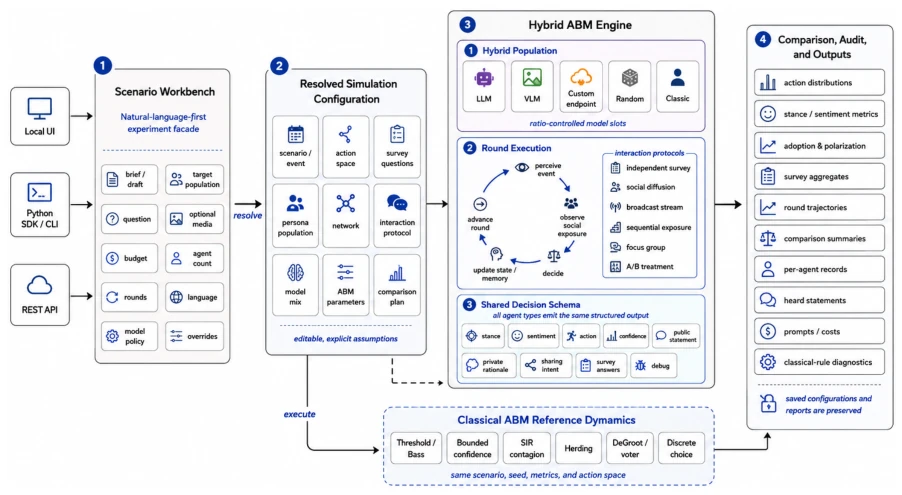
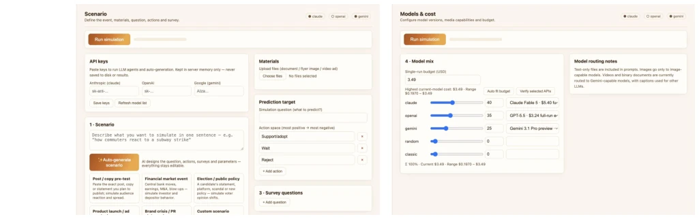
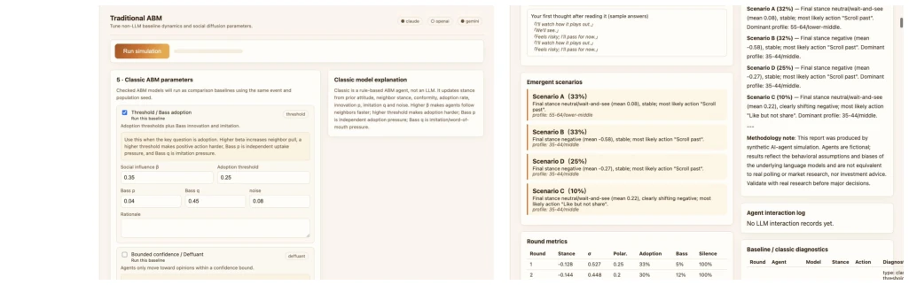

As a review from the perspective of embodied AI, this purely social simulation has nothing to do with robotic limb movements. AgoraSim does not boast about predictive capabilities, but emphasizes "interpretability" and "comparison". LLMs tend to become "average personas"; this paper introduces classic ABM models (e.g., Bass diffusion) as references, forcibly compressing flashy text outputs into a structured decision space. The advantage is high transparency; the disadvantage is still relying on the LLM's own hallucinations and biases, and "simulation" does not equal "reality". It attempts to solve the problem of difficult comparison of LLM outputs, achieving cross-model alignment through shared action spaces, but cannot guarantee external validity. This serves as putting a "seatbelt" on LLM social simulation, preventing users from taking synthetic data seriously.
研究动机Motivation
现有 LLM 社会仿真（如 Park et al., 2022; Park et al., 2023）常被误读为预测工具，但实际输出往往是流畅的废话。传统 ABM 参数化难，LLM 又缺乏行为多样性。作者想解决的是：如何把自然语言场景转化为可编辑的 ABM 配置，并对比 LLM 行为与经典动力学（如阈值模型、SIR 传播）。如果不对比，用户无法知道观察到的模式是源于语言理解还是简单的扩散过程。此外，LLM 可能坍缩为典型响应，无法捕捉极化或级联效应（Wu et al., 2026）。
Existing LLM social simulations (e.g., Park et al., 2022; Park et al., 2023) are often misread as prediction tools, but actual outputs are often fluent nonsense. Traditional ABM is hard to parameterize, and LLMs lack behavioral diversity. What the authors aim to solve is: how to convert natural language scenarios into editable ABM configurations, and compare LLM behavior with classic dynamics (e.g., threshold models, SIR propagation). If not compared, users cannot know if observed patterns stem from language understanding or simple diffusion processes. Additionally, LLMs may collapse into typical responses, unable to capture polarization or cascade effects (Wu et al., 2026).
The core is "hybrid execution". 1. Configuration layer: Parse text/media into editable ABM configurations (events, action spaces, networks), avoiding black-box prompts. 2. Engine layer: Support mixed-proportion sampling of LLM, VLM, random, classic rule agents, unified output of structured decision objects (stance, action, confidence). 3. Comparison layer: Run matching classic reference dynamics (Threshold, Bass, DeGroot, etc.), sharing the same scenarios and metrics. 4. Audit layer: Record all Prompts, decisions, costs, support drill-down from macro curves to micro decisions. All agents, via shared decision interfaces, ensure open text behavior can be audited. Interaction protocols (e.g., independent surveys, social diffusion) as experimental variables rather than hidden assumptions, ensuring hypotheses are editable. System exposed via UI, SDK, API, supports offline random mode.

Figure 1: AgoraSim architecture. A natural-language or multimodal artifact is resolved into an editable simulation configuration, executed by a ratio-controlled hybrid ABM engine, and compared with matched classical reference dynamics through shared metrics and audit records.

Figure 2: Creating a scenario experiment. Users enter a natural-language or multimodal artifact, edit the generated action space and survey fields, and choose a ratio-controlled mix of LLM, VLM, custom, random, and classical agents.
实验Experiments
没有传统数据集或准确率评测，而是演示了“拥堵定价”场景。对比了混合代理运行与经典参考动力学（如 Bass 采纳、离散选择）的轨迹。发现若 LLM 轨迹与经典模型重合，说明可能无需复杂语言理解；若发散，则提示需验证假设。结果强调探索性而非预测性，支持假设生成和教学。系统提供 UI、SDK 和 API，支持离线随机模式以规避 API 依赖。通过审计记录链接宏观曲线到代理状态，揭示结果来源。
There is no traditional dataset or accuracy evaluation, but demonstrates a "congestion pricing" scenario. Compared trajectories of mixed agent runs with classic reference dynamics (e.g., Bass adoption, discrete choice). It is found that if LLM trajectories coincide with classic models, it suggests complex language understanding may not be needed; if divergent, it prompts hypothesis verification. Results emphasize exploratory over predictive, supporting hypothesis generation and teaching. System provides UI, SDK, and API, supports offline random mode to avoid API dependency. Audit records link macro curves to agent states, revealing result sources.

Figure 3: Comparison and inspection. Users select classical ABM reference dynamics with editable parameters, then inspect emergent scenario summaries, round metrics, methodology notes, and diagnostic records after execution.